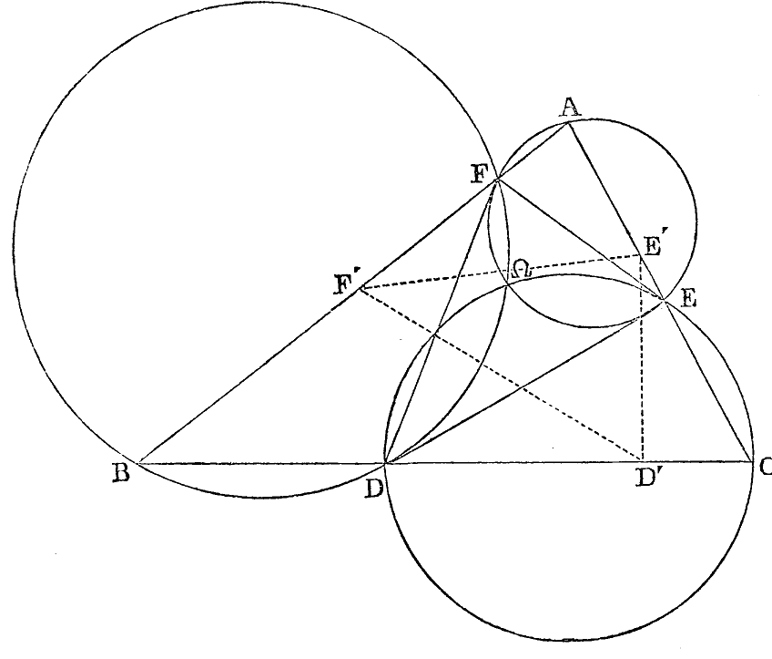

Supplementary Chapter, Section II: Two Figures Directly Similar & Brocard Points¶
John Casey — Supplementary Chapter on the Recent Elementary Geometry of the Triangle (5th ed., 1888, pp. 173–178)
f. 0199 · p. 173
SECTION II.¶
THEORY OF TWO FIGURES DIRECTLY SIMILAR.¶
Theorem of the Double (Self-Corresponding) Point (Props. 1–2, ff. ``0199–0201``). Given any two directly similar plane figures $F$ and $F'$ (not merely homothetic or congruent by pure translation), there exists a unique Double Point $O$—the Centre of Spiral Similarity—about which a rotation through a fixed angle combined with a constant homothecy carries $F$ onto $F'$.
f. 0201 · p. 175Every pair of homologous lines $AB, A'B'$ intersect at a point $I$ such that the circles described about $\triangle OAA'$ and $\triangle OBB'$ pass through $I$, identifying $O$ geometrically as the second intersection of two circles (Prop. 2).
f. 0202 · p. 176
Section II, Propositions 3–5 (:person:`Brocard’s <brocard>` :term:`Points <brocard-points>` $\Omega, \Omega'$ & :term:`Brocard Angle <brocard-angle>` $\omega$). In any triangle $\triangle ABC$:
The three circles described on $AB$ tangent to $BC$ at $B$, on $BC$ tangent to $CA$ at $C$, and on $CA$ tangent to $AB$ at $A$ concur at a unique interior point $\Omega$ (the First Brocard Point) such that
$$ \angle \Omega AB = \angle \Omega BC = \angle \Omega CA = \omega. $$
Cyclically reversing orientation, the three circles tangent at $A, B, C$ in the opposite sense concur at the Second Brocard Point $\Omega'$ (isogonal conjugate of $\Omega$) with the same common acute angle $\angle \Omega' BA = \angle \Omega' CB = \angle \Omega' AC = \omega$.
The Brocard Angle $\omega$ satisfies the fundamental cotangent and cosecant identities:
$$ \cot \omega = \cot A + \cot B + \cot C = \frac{a^2 + b^2 + c^2}{4\Delta}, \qquad \csc^2 \omega = \csc^2 A + \csc^2 B + \csc^2 C, $$
with sharp upper bound $\omega \le 30^\circ$ (equality iff $\triangle ABC$ is equilateral).
f. 0203 · p. 177
Construction via Spiral Similarity (f. ``0203``).—If $DFE$ be an inscribed triangle directly similar to $\triangle ABC$ (with vertex $F$ corresponding to $A$ moving along $AB$), the double point $\Omega$ is the unique point of concurrence of the three adjoint circles described through $A, B$ tangent to $BC$ at $B$, etc.; while $\Omega'$ arises identically by letting the corresponding vertex $F'$ move along $AC$.


Cor. 1.—The circumcircle of the triangle $A\Omega B$ touches $BC$ in $B$; similarly, $B\Omega C$ touches $CA$ in $C$ and $C\Omega A$ touches $AB$ in $A$.
f. 0204 · p. 178By cyclic symmetry, the reversed triad of circles through $\Omega'$ touches $BC$ in $C$, $CA$ in $A$, and $AB$ in $B$, concluding Section II and preparing the simultaneous theory of three directly similar figures in Section III.